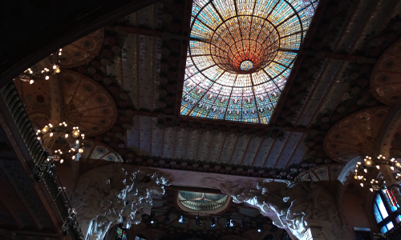
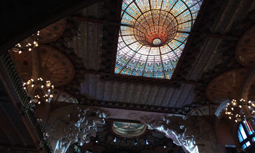
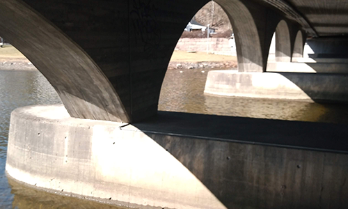
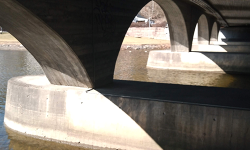

Miren Arregui
Velkommen til hjemmesiden min! Her samler jeg forskjellige øyeblikk fra livet mitt gjennom farger, bilder og illustrasjoner jeg har laget. Denne kombinasjonen av farger er det som har gjort at jeg ble meg. Jeg har bakgrunn i både kommunikasjon og sosiologi, noe som har bidratt til at jeg har jobbet med et mangfold av prosjekter som jeg ser frem til å dele med deg. I tillegg har jeg erhvervet IT-ferdigheter som tillot meg å kode dette nettstedet med HTML5 og CSS sammen med Bootstrap Framework, noe som også har gjort at jeg kunne opprette dette responsive nettstedet. Det første du må vite om meg er at jeg alltid har funnet grå himmel ganske romantisk.
Om

Bakgrunnen min er ganske mangfoldig, noe som er konsekvensen av en nysgjerrig personlighet. Jeg fullførte bacheloren min i audiovisuell kommunikasjon (UPV / EHU), hvor jeg lærte om multimedieteknologier og forskjellige formater og systemer, for eksempel TV, internett og radio. Vi gjennomførte prosjekter som en pilotepisode for en webserie, en dokumentar eller et radioprogram.
Mastergraden min er i sosilogi: Sosial transformasjon og innovasjon (Universitat de Barcelona). Denne samfunnsvitenskapen dekker et stort felt av aspekter fra økonomi til subjektiv velvære. Masteren var hovedsakelig fokusert på endringene som skjedde i samfunnet, og hvordan man kan møte dagens utfordringer gjennom forskjellige institusjoner.
Sist, men ikke minst, har jeg også gjennomført følgende nettbaserte kurs som en komplementær utdanning: Green Marketing (Universidad de los Andes), Introduction to Web Development (Samsung, Spania), og Introduction to Classical Music (Yale University).
Ferdigheter og erfaring
Miljø og bærekraft
Kommunikasjons- og markedsføringsassistent hos Mare Terra Coffee, et team som er opptatt av bærekraft og rettferdig handel innen markedet for grønn kaffe.
Der gjennomførte jeg bannerdesignarbeid, koordinering av oppgaver med utviklere og grafiske designere, fotografering, bruk av redigeringsprogramvarer, grunnleggende illustrasjon, eventplanlegging og litt UX for nettstedet.
Jeg har jobbet som begivenhetsplanlegger for
8th European Conference on Sustainable Cities & Towns på Eventia, hvor jeg hadde praksisplass.
 

Kultur og sosial transformasjon
For masteroppgaven min forsket jeg på korsang og ensomhet hos eldre mennesker. Jeg snakket om prosjektet på Research Conferences (2019) ved Universitat de Barcelona.
Sopran på Orfeó Català og Cor Jove i Det Katalanske Musikkpalasset. Jeg har sunget i produksjoner som Belshazzars Feast - BBC Proms (Simon Rattle, 2019), Goya Awards med Rosalía (Esteve Nabona, 2019), Bryn Terfel Recital (Gareth Jones, 2018), og Considering Matthew Shepard (Simon Halsey, 2017) blant andre.
Jeg deltok i Understanding-prosjektet, en ungdomsutveksling (Erasmus +) i Danmark som samlet mennesker med ulik kulturell bakgrunn.
Mitt prosjekt "Con la Música a Otra Parte" - om musikkband - var finalist på Eikentalent (2016), en TV-formatkonkurranse.
 

Sosiale prosjekter
Jeg har jobbet på YMCA, jobbet med sosialprosjektet "ungdom og barn" og koordinert prosjektet "Spansk for utlendinger" som ble drevet av frivillige.
Jeg har vært frivillig på en sommerleir for barn på AEI El Raval, og jeg har vært i kontakt med Clavé XXI-prosjektet, som jobber med barn, utdanning og musikk.
Deltaker på Your Europe Your Say! 2011.
Det er den tiden du har kastet bort på rosen din, som gjør den så viktig for deg.
Audiovisuelle
La oss legge til noen visuelle elementer! Her kan du finne noen av prosjektene jeg deltok i, i tillegg til lydeksempler fra sangene mine. Du finner to dokumentarer; den første heter Lokatza-Fango, som er ordene på baskisk og spansk for gjørme. Denne dokumentaren er fortalt av vitner om tragedien, som snakker om flommene i byen Bilbao i 1983. Den andre videoen er en dokumentar som belyser kvinner som levde under den spanske etterkrigstiden. Den siste videoen er en pilotepisode for en web-serie, Obsessive compulsive. Episoden introduserer hovedpersonene, tre romkamerater med veldig mangfoldige og skarpe personligheter og resultatet av dette på daglig basis.